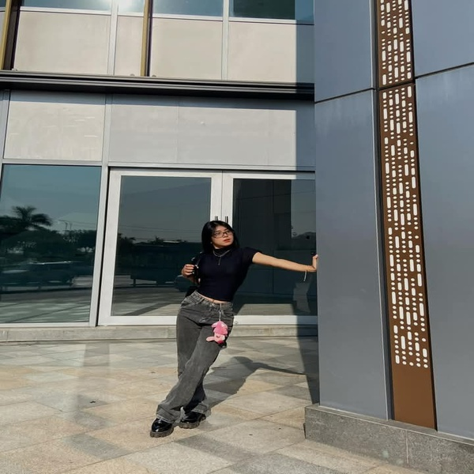
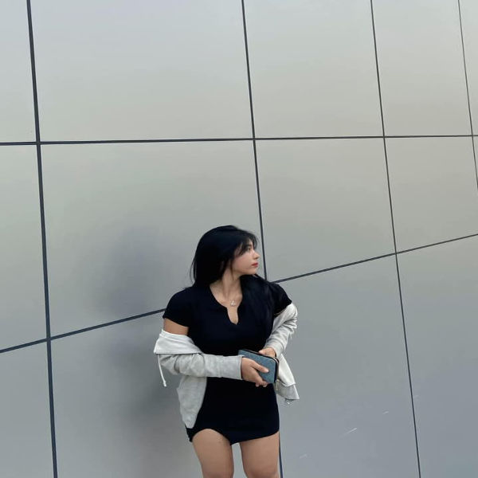
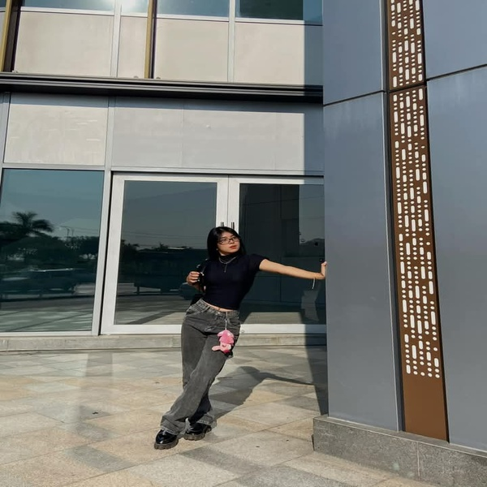
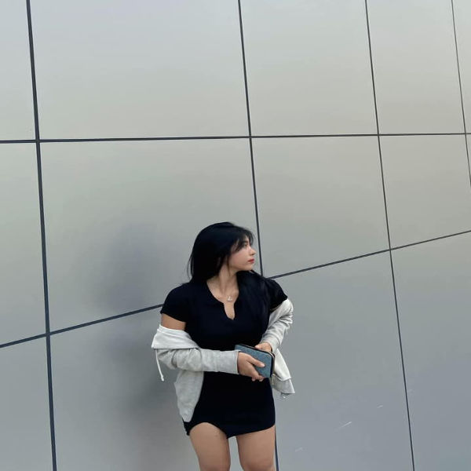
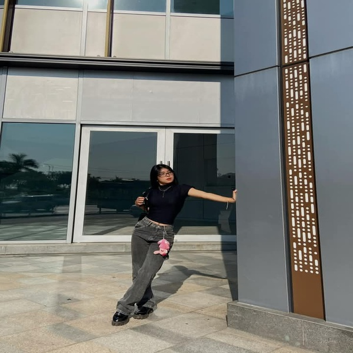
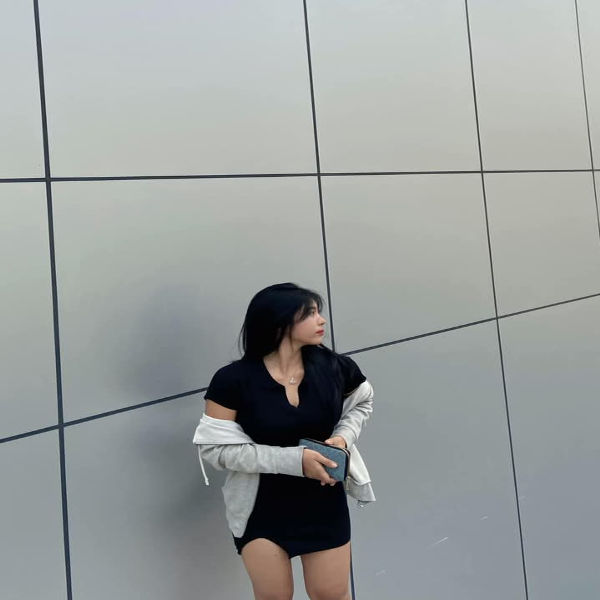

~ GALLERY ~


 



Capturing moments that tell a story—I'm Thazin Htut Oo, a postcard model bringing beauty and emotion to every frame. With a passion for visual storytelling, I strive to create timeless images that inspire and connect with people across the world.
Whether it's a milestone event, a breathtaking landscape, or a timeless moment frozen in time, I bring artistry and elegance to every postcard image. As a postcard model, I strive to create visuals that not only capture beauty but also evoke emotions and tell a story. Each photograph is more than just an image—it's a memory, a connection, and a piece of art that travels beyond borders, touching hearts around the world.
As a dedicated postcard model, I bring elegance, emotion, and storytelling to every image. Whether capturing milestone events, iconic landscapes, or timeless moments, my goal is to create visually compelling postcards that leave a lasting impression. With a keen eye for detail and a passion for artistic expression, I collaborate with photographers and brands to produce high-quality visuals that connect with audiences worldwide.
Classic and artistic portraits for timeless postcards.
Stunning postcard-worthy images set in breathtaking locations.
Creative, stylized shoots perfect for storytelling through postcards.


Thazin’s ability to evoke and capture raw emotion in every shot is extraordinary. With a natural elegance and passion for storytelling, she creates timeless images that resonate deeply and leave a lasting impact. Each frame tells a unique story, filled with depth, beauty, and authenticity.